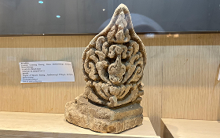
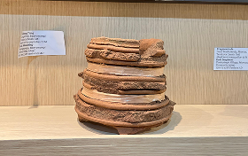
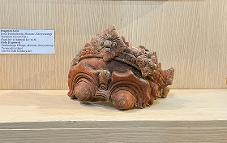
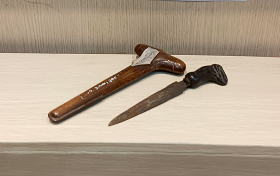
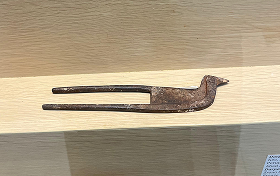
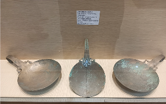
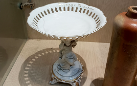

FRAGMEN ARCA JALADWARA

Fragmen arca jaladwara merupakan bagian dari pancuran air pada bangunan suci masa Hindu–Buddha. Artefak ini berfungsi sebagai saluran air suci dan mencerminkan teknik arsitektur serta nilai religius masyarakat masa lalu.
WADAH AIR I
.png)
Wadah air adalah benda yang digunakan sejak masa lalu untuk menyimpan dan menampung air, terbuat dari tanah liat, batu, atau logam. Artefak ini mencerminkan kebutuhan dasar serta perkembangan teknologi kehidupan sehari-hari.
ARCA PRIA BLAMBANGAN
.png)
Arca pria Blambangan merupakan patung yang menggambarkan tokoh manusia dari wilayah Blambangan, kemungkinan berkaitan dengan tokoh penting atau simbol budaya lokal. Artefak ini mencerminkan seni pahat dan identitas budaya masyarakat setempat.
ARCA WANITA BLAMBANGAN
.png)
Arca ini menggambarkan figur perempuan dari tradisi Blambangan dan mencerminkan seni pahat, identitas budaya, serta kemungkinan peran sosial atau religius masyarakat setempat.
STUPIKA
.png)
Stupika adalah miniatur stupa dari tradisi Buddha yang digunakan sebagai sarana ritual dan simbol ajaran Buddha. Artefak ini menunjukkan perkembangan agama Buddha di Nusantara.
MATERAI BUDDHA
.png)
Materai Buddha merupakan cap atau stempel bergambar simbol Buddha yang digunakan untuk keperluan keagamaan atau administrasi. Artefak ini mencerminkan praktik religi dan tradisi tulis.
GENTA

Genta adalah lonceng kecil yang digunakan dalam upacara keagamaan Hindu–Buddha sebagai alat pemanggil perhatian spiritual. Artefak ini mencerminkan praktik ritual masa lalu.
KENDI SUSU
.png)
Kendi susu merupakan wadah cairan yang digunakan untuk menyimpan susu atau air dalam kehidupan sehari-hari maupun ritual. Artefak ini menunjukkan kebiasaan domestik masyarakat.
PATUNG IKAN
.png)
Patung ikan merupakan artefak hias atau simbolik yang melambangkan kesuburan, kehidupan, atau kemakmuran. Artefak ini mencerminkan nilai simbolis dalam budaya masyarakat masa lalu.
PINGGAN
.png)
Pinggan merupakan piring atau wadah makan yang digunakan sejak masa lalu, terbuat dari keramik atau porselin. Artefak ini mencerminkan kebiasaan makan serta perkembangan teknologi keramik masyarakat.
CELENGAN
.png)
Celengan adalah wadah penyimpanan uang yang telah dikenal sejak masa lalu, biasanya terbuat dari tanah liat atau keramik. Artefak ini menunjukkan kebiasaan menabung dan kehidupan ekonomi masyarakat.
DEWA SIWA MAHAKALA
.png)
Arca Dewa Siwa Mahakala merupakan perwujudan Siwa sebagai pelindung dan penjaga dalam ajaran Hindu. Artefak ini mencerminkan kepercayaan, praktik keagamaan, serta seni pahat pada masa Hindu–Buddha.
ARTEFIKS

Artefak wadah air merupakan benda yang digunakan sejak masa prasejarah hingga sejarah untuk menampung dan menyimpan air. Dibuat dari bahan seperti tanah liat, batu, atau logam, wadah air mencerminkan kebutuhan dasar manusia serta perkembangan teknologi dan kehidupan sehari-hari masyarakat masa lalu.
SELUBUNG TIANG

selubung tiang merupakan unsur bangunan yang digunakan sejak masa lalu untuk melapisi atau memperkuat tiang, biasanya terbuat dari batu, kayu, atau logam. Artefak ini mencerminkan perkembangan teknologi arsitektur serta fungsi perlindungan dan estetika dalam bangunan tradisional.
FRAGMEN KALA

Artefak fragmen kala merupakan bagian dari hiasan arsitektur bercorak Kala yang berkembang pada masa Hindu–Buddha. Fragmen ini biasanya ditemukan pada bangunan suci dan berfungsi sebagai simbol pelindung, mencerminkan nilai keagamaan serta seni bangunan masyarakat masa lalu.
BATA MERAH MACAN PUTIH
.png)
Artefak bata merah Macan Putih merupakan sisa material bangunan kuno yang digunakan pada masa lalu, kemungkinan pada masa Hindu–Buddha atau awal Islam. Bata ini mencerminkan teknik konstruksi tradisional serta keberadaan bangunan penting dan nilai simbolik dalam sejarah setempat.
BATA MERAH SONGGON
.png)
Artefak bata merah Songgon merupakan material bangunan kuno yang digunakan pada masa lalu, terutama pada masa Hindu–Buddha hingga awal Islam. Bata ini mencerminkan teknik pembangunan tradisional serta jejak permukiman dan aktivitas budaya masyarakat setempat.
BATA PUTIH
.png)
Artefak bata putih Songgon merupakan material bangunan kuno yang digunakan pada masa lalu, kemungkinan pada masa Hindu–Buddha hingga awal Islam. Bata ini mencerminkan variasi teknik konstruksi serta penggunaan bahan lokal dalam pembangunan bangunan bersejarah.
WADAH AIR II
.png)
Artefak wadah air merupakan benda yang digunakan sejak masa prasejarah hingga sejarah untuk menampung dan menyimpan air. Dibuat dari bahan seperti tanah liat, batu, atau logam, wadah air mencerminkan kebutuhan dasar manusia serta perkembangan teknologi dan kehidupan sehari-hari masyarakat masa lalu.
LAMPU MINYAK
.png)
Artefak lampu minyak digunakan sejak masa lalu sebagai alat penerangan sebelum dikenal listrik. Terbuat dari tanah liat, logam, atau kaca, lampu ini mencerminkan kebutuhan penerangan serta perkembangan teknologi dan kehidupan sehari-hari masyarakat masa lalu.
CUNDRIK

Artefak cundrik senjata tikam tradisional yang telah digunakan sejak masa lalu sebagai alat pertahanan diri dan simbol status. Cundrik mencerminkan keterampilan pengolahan logam serta nilai budaya dan sosial masyarakat pada masanya.
KACIP

Artefak kacip merupakan alat tradisional yang digunakan sejak masa lalu untuk memotong atau menghancurkan bahan, seperti pinang dalam kebiasaan menginang. Terbuat dari logam atau bahan keras lainnya, kacip mencerminkan tradisi budaya dan kebiasaan sosial masyarakat pada masanya.
DARPANA

Artefak darpana merupakan cermin tradisional yang dikenal sejak masa Hindu–Buddha dan sering digunakan dalam upacara keagamaan maupun kehidupan sehari-hari. Darpana mencerminkan pengaruh budaya India serta perkembangan seni dan simbolisme spiritual masyarakat masa lalu.
CAWAN BERKAKI

Artefak cawan berkaki merupakan wadah yang telah digunakan sejak masa lalu, terutama dalam konteks ritual dan upacara adat. Cawan ini mencerminkan perkembangan seni kerajinan serta fungsi keagamaan dan sosial dalam budaya masyarakat masa lalu.
BOTOL MINUM
.png)
Artefak botol minum merupakan wadah cairan yang digunakan sejak masa lalu, terbuat dari bahan seperti kaca, keramik, atau logam. Botol ini mencerminkan perkembangan teknologi pembuatan wadah serta kebiasaan konsumsi masyarakat pada masanya.
BONEKA MANTEN BLAMBANGAN
.png)
Artefak boneka manten Blambangan merupakan benda budaya yang berkaitan dengan tradisi pernikahan masyarakat Blambangan. Boneka ini berfungsi sebagai simbol adat, mencerminkan nilai budaya, kepercayaan, dan identitas masyarakat Blambangan pada masa lalu.
JOBONG
.png)
Artefak jobong merupakan wadah tradisional dari tanah liat atau batu yang digunakan sejak masa lalu untuk keperluan rumah tangga dan ritual, seperti menampung air atau bahan tertentu. Jobong mencerminkan teknologi sederhana serta kebiasaan hidup masyarakat pada masanya.
KEMUNCAK
.png)
Artefak kemuncak adalah hiasan yang ditempatkan di puncak bangunan suci pada masa Hindu–Buddha. Artefak ini melambangkan kesakralan, perlindungan, dan hubungan antara manusia dengan dunia spiritual.
JAMBANGAN
.png)
Artefak jambangan merupakan wadah yang digunakan sebagai tempat air suci, sesaji, atau hiasan dalam upacara keagamaan. Artefak ini mencerminkan fungsi ritual dan nilai estetika dalam budaya masa lalu.
LINNGA
.png)
Artefak lingga adalah simbol pemujaan Dewa Siwa yang melambangkan kekuatan, kesuburan, dan penciptaan. Artefak ini menjadi bukti penting praktik keagamaan dan kepercayaan masyarakat Hindu pada masa lampau.
LINGGA-YONI
.png)
Artefak lingga–yoni merupakan artefak keagamaan dari masa Hindu–Buddha yang melambangkan persatuan unsur laki-laki (lingga) dan perempuan (yoni) sebagai simbol kesuburan, kehidupan, dan penciptaan. Artefak ini digunakan dalam pemujaan Dewa Siwa dan menunjukkan praktik keagamaan masyarakat masa lalu.
YONI
.png)
Artefak yoni adalah bagian alas dari lingga yang melambangkan unsur perempuan, kesuburan, dan sumber kehidupan. Artefak ini berfungsi sebagai tempat penyalur air suci dalam ritual keagamaan dan mencerminkan kepercayaan serta sistem religi masyarakat Hindu pada masanya.
GUCI CINA I
.png)
Artefak guci Cina merupakan wadah keramik yang berkembang sejak masa dinasti-dinasti Cina dan masuk ke Nusantara melalui jalur perdagangan. Guci ini digunakan untuk menyimpan barang serta memiliki nilai simbolik, mencerminkan kemajuan teknologi keramik dan hubungan dagang masa lalu.
GUCI CINA II
.png)
Artefak guci Cina merupakan wadah keramik yang berkembang sejak masa dinasti-dinasti Cina dan masuk ke Nusantara melalui jalur perdagangan. Guci ini digunakan untuk menyimpan barang serta memiliki nilai simbolik, mencerminkan kemajuan teknologi keramik dan hubungan dagang masa lalu.
GUCI CINA III
.png)
Artefak guci Cina merupakan wadah keramik yang berkembang sejak masa dinasti-dinasti Cina dan masuk ke Nusantara melalui jalur perdagangan. Guci ini digunakan untuk menyimpan barang serta memiliki nilai simbolik, mencerminkan kemajuan teknologi keramik dan hubungan dagang masa lalu.
GUCI CINA IV
.png)
Artefak guci Cina merupakan wadah keramik yang berkembang sejak masa dinasti-dinasti Cina dan masuk ke Nusantara melalui jalur perdagangan. Guci ini digunakan untuk menyimpan barang serta memiliki nilai simbolik, mencerminkan kemajuan teknologi keramik dan hubungan dagang masa lalu.
GUCI AKHIR DINASTI QING
.png)
Artefak guci akhir Dinasti Qing merupakan keramik Cina yang dibuat pada masa akhir Dinasti Qing (abad ke-19–awal abad ke-20) dan masuk ke Nusantara melalui perdagangan. Guci ini mencerminkan perkembangan akhir seni keramik Cina serta hubungan dagang dan budaya pada masa tersebut.
SENDOK I

Artefak sendok telah digunakan sejak masa lalu sebagai alat makan dan pengambil bahan makanan. Terbuat dari bahan seperti kayu, tulang, logam, atau keramik, sendok mencerminkan perkembangan kebiasaan makan dan teknologi masyarakat pada masanya.
SENDOK II
.png)
Artefak sendok telah digunakan sejak masa lalu sebagai alat makan dan pengambil bahan makanan. Terbuat dari bahan seperti kayu, tulang, logam, atau keramik, sendok mencerminkan perkembangan kebiasaan makan dan teknologi masyarakat pada masanya.
PIRING BELANDA I

Artefak piring Belanda merupakan keramik yang masuk ke Nusantara pada masa kolonial Belanda melalui jalur perdagangan dan administrasi kolonial. Piring ini mencerminkan pengaruh budaya Eropa, perkembangan industri keramik Belanda, serta hubungan ekonomi dan sosial pada masa tersebut.
PIRING BELANDA II
.png)
Artefak piring Belanda merupakan keramik yang masuk ke Nusantara pada masa kolonial Belanda melalui jalur perdagangan dan administrasi kolonial. Piring ini mencerminkan pengaruh budaya Eropa, perkembangan industri keramik Belanda, serta hubungan ekonomi dan sosial pada masa tersebut.
PIRING DINASTI

Artefak piring dinasti merupakan keramik yang berasal dari masa dinasti-dinasti besar, terutama Cina, dan masuk ke Nusantara melalui jalur perdagangan. Piring ini mencerminkan perkembangan seni keramik, teknologi pembakaran, serta hubungan dagang dan budaya masyarakat masa lalu.
PIRING EROPA I

Artefak piring Eropa merupakan keramik yang masuk ke Nusantara sejak masa kolonial melalui perdagangan dan pengaruh budaya Barat. Piring ini mencerminkan perkembangan teknologi keramik Eropa serta interaksi budaya dan ekonomi masyarakat masa lalu.
PIRING DINASTI QING I
.png)
Artefak piring Dinasti Qing I merupakan keramik Cina yang dibuat pada masa Dinasti Qing dan masuk ke Nusantara melalui jalur perdagangan. Piring ini mencerminkan perkembangan seni dan teknologi keramik serta hubungan dagang dan budaya pada masanya.
PIRING DINASTI QING II
.png)
Piring ini berasal dari masa Dinasti Qing (abad ke-17–20) di Cina dan masuk ke Nusantara melalui perdagangan. Artefak ini mencerminkan kemajuan teknologi porselin serta hubungan dagang antarwilayah.
MANGKUK
.png)
Mangkuk merupakan wadah makan yang digunakan sejak masa lalu, terbuat dari tanah liat atau porselin. Artefak ini mencerminkan kebiasaan konsumsi dan perkembangan kerajinan keramik.
PIRING PORSELIN
.png)
Piring porselin adalah peralatan makan berkualitas tinggi yang berkembang di Cina dan menyebar melalui jalur perdagangan. Artefak ini menunjukkan kemajuan teknik pembakaran dan seni hias keramik.
PIRING CINA I
.png)
Piring Cina I merupakan keramik impor dari Cina yang digunakan sebagai peralatan rumah tangga atau benda hias. Artefak ini mencerminkan hubungan budaya dan perdagangan antara Cina dan Nusantara.
PIRING CINA II
.png)
Piring Cina II merupakan keramik impor dari Cina yang masuk ke Nusantara melalui jalur perdagangan. Artefak ini mencerminkan perkembangan teknologi porselin serta pertukaran budaya antardaerah.
PIRING EROPA II
.png)
Piring Eropa II adalah keramik yang masuk pada masa kolonial sebagai bagian dari perdagangan dan konsumsi masyarakat Eropa di Nusantara. Artefak ini menunjukkan pengaruh budaya Barat dan perkembangan industri keramik Eropa.
PIRING CINA III
.png)
Piring Cina III merupakan variasi keramik Cina dengan bentuk dan motif berbeda, digunakan sebagai peralatan rumah tangga atau hiasan. Artefak ini mencerminkan keberlanjutan perdagangan serta seni keramik Cina di Nusantara.
MANGKUK DINASTI QING
.png)
Mangkuk ini berasal dari masa Dinasti Qing (abad ke-17–20) dan masuk ke Nusantara melalui perdagangan. Artefak ini mencerminkan kualitas tinggi keramik Cina serta hubungan dagang antardaerah.
MANGKUK CINA
.png)
Mangkuk Cina merupakan wadah keramik impor yang digunakan untuk keperluan makan atau ritual. Artefak ini menunjukkan perkembangan seni dan teknologi pembuatan keramik Cina.
PIRING CINA IV
.png)
Piring Cina IV adalah variasi keramik Cina dengan bentuk dan motif tertentu yang digunakan sebagai peralatan rumah tangga atau hiasan. Artefak ini mencerminkan keberlanjutan perdagangan dan pengaruh budaya Cina di Nusantara.